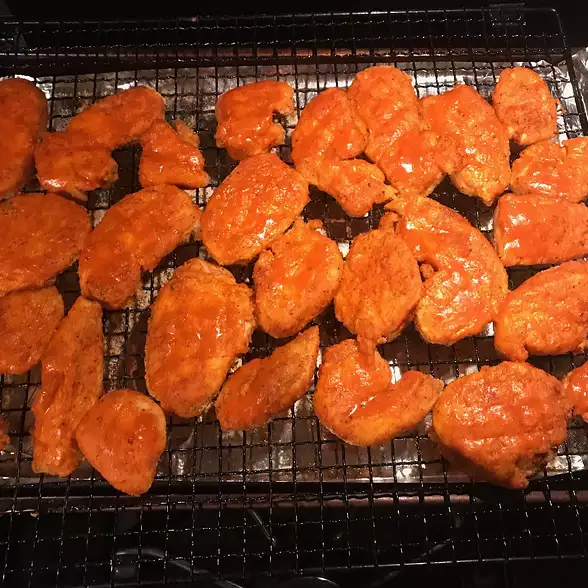

Nashville Hot Chicken Breasts

Baked Nashville Hot Chicken Breasts
Ingredients:
Brine
- 1 Quart Water
- 1/4 Cup Salt
- 1/4 Cup White Sugar
- 1/4 Cup Hot Sauce
- 4 Skinless, Boneless Chicken Breasts, Cut Into Strips
Coating
- 1 Cup All Purpose Flour
- 1/2 Teaspoon Cayenne Pepper
- 1/2 Teaspoon Paprika
- 1/2 Teaspoon Salt
- 1/4 Teaspoon Salt
- 1/4 Teaspoon Garlic Powder
- 1/4 Teaspoon Ground Black Pepper
Sauce
- 3 Tablespoons Vegetable Oil
- 1 Tablespoon Cayenne Pepper
- 1/2 Teaspoon Paprika
- 1/2 Teaspoon Salt
- 1/2 Teaspoon White Sugar
- 1/4 Teaspoon Garlic Powder
- Cooking Spray
Steps
- Mix water, 1/4 cup salt, 1/4 cup sugar, and hot sauce together in a large bowl until sugar and salt are dissolved into the brine. Place chicken pieces in the brine and refrigerate, 30 minutes to 1 hour. Pour brine from the bowl.
- Preheat oven to 350 degrees F (175 degrees C). Place a baking rack onto a baking sheet and coat rack with cooking spray.
- Combine flour, 1/2 teaspoon cayenne pepper, 1/2 teaspoon paprika, 1/2 teaspoon salt, 1/4 teaspoon garlic powder, and black pepper in a shallow bowl until coating is well mixed. Press chicken pieces into the coating until both sides are evenly coated; place on the prepared rack.
- Bake in the preheated oven for 20 minutes. Spray each chicken piece with cooking spray; flip and spray the other side. Continue baking until chicken is no longer pink in the center, about 10 minutes. An instant-read thermometer inserted into the center should read at least 165 degrees F (74 degrees C).
- Heat oil in a small pan over medium heat until shimmering. Mix 1 tablespoon cayenne pepper, 1/2 teaspoon paprika, 1/2 teaspoon salt, 1/2 teaspoon sugar, and 1/4 teaspoon garlic powder together in a bowl; add to oil and cook for 30 seconds. Brush oil mixture onto cooked chicken, adding more layers for extra heat.